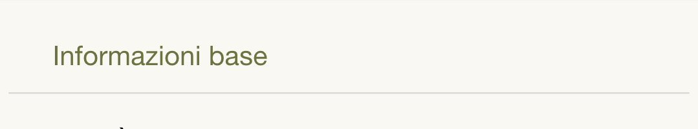

<ion-card>
  
  <ion-card-header>
    <ion-card-title>Passo 1: Dati</ion-card-title>
  </ion-card-header>
  <ion-card-content>
    Aggiungi informazioni sulla segnalazione
  </ion-card-content>
</ion-card>
<ion-card>
  
  <ion-card-header>
    <ion-card-title>Passo 2: Foto</ion-card-title>
  </ion-card-header>
  <ion-card-content>
    Allega almeno una foto descrittiva
  </ion-card-content>
</ion-card>
<ion-card>
  
  <ion-card-header>
    <ion-card-title>Passo 3: Mappa</ion-card-title>
  </ion-card-header>
  <ion-card-content>
    Segna con lo spillo il luogo della segnalazione
  </ion-card-content>
</ion-card>
<ion-button (click)="dismiss()">
  Chiudi
</ion-button>
<ion-item>
  <ion-toggle [(ngModel)]="hidehelper" (ionChange)="changeToggle()" slot="start"></ion-toggle>
  <ion-label>Non vizualizzare più</ion-label>
</ion-item>